4800万回
NEW
4800万回
NEW
「なぜ拾うの？ゴミでしょ」と言われる落ち葉 1枚ずつ折り畳んで重ねていくと、おしゃれな“花束“が完成 「素敵」「ゴミが宝に」と4800万再生【海外】
ねとらぼ · 09 Nov · @mariona.roma ♥2,973,548
4800万回
NEW
ねとらぼ · 09 Nov · @mariona.roma ♥2,973,548
Excite エキサイト · 08 Nov
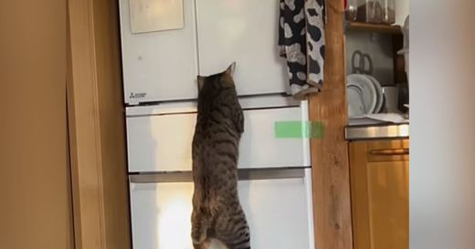
175万回 NEWExcite エキサイト · 09 Nov
Excite エキサイト · 08 Nov
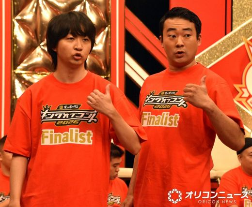
100万回 NEWオリコンニュース · 09 Nov
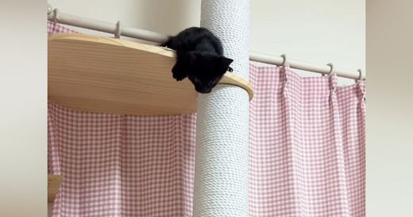
87万回 NEWライブドアニュース · 09 Nov
 80万回
80万回
ねとらぼ · 08 Nov · @ousen_chan ♥64,069
Excite エキサイト · 09 Nov
Excite エキサイト · 08 Nov
 57万回
NEW
57万回
NEW
Excite エキサイト · 09 Nov
 36万回
NEW
36万回
NEW
ライブドアニュース · 09 Nov
Excite エキサイト · 08 Nov
Excite エキサイト · 08 Nov
 24万回
NEW
24万回
NEW
Excite エキサイト · 09 Nov
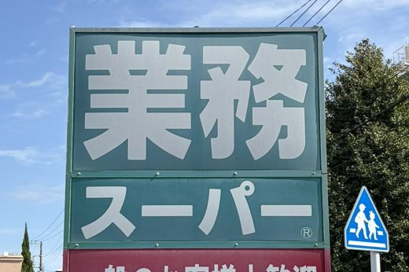
NEWBuzzFeed · 09 Nov
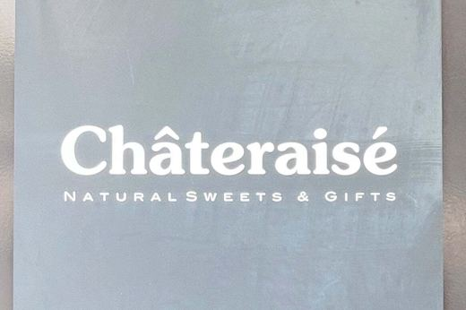
NEWYahoo!ニュース · 09 Nov
au Webポータル · 09 Nov
テレビ東京 · 09 Nov
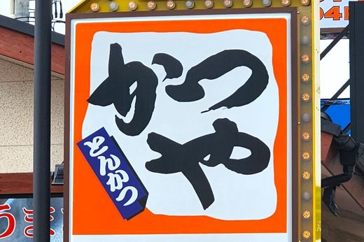
NEWBuzzFeed · 09 Nov
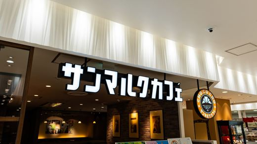
NEWAll About ニュース · 09 Nov
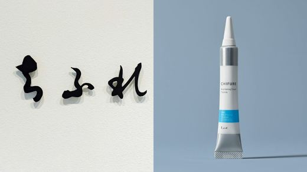
東洋経済オンライン · 09 Nov
Yahoo!ニュース · 09 Nov
ｄメニューニュース · 09 Nov
毎日キレイ · 09 Nov
ねとらぼ · 09 Nov · @s_monmo_ ♥3,871
Infoseek · 09 Nov · @umi_fudge ♥716
ヨムーノ · 09 Nov
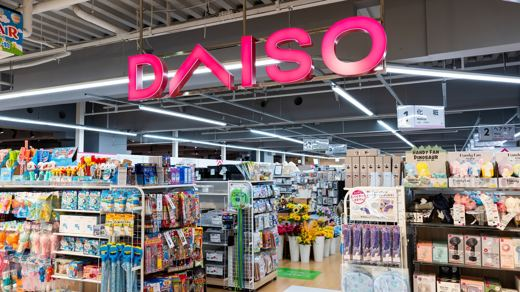
NEWAll About ニュース · 09 Nov
ライブドアニュース · 08 Nov
 NEW
NEW
au Webポータル · 07 Nov · @ririka_shimamura
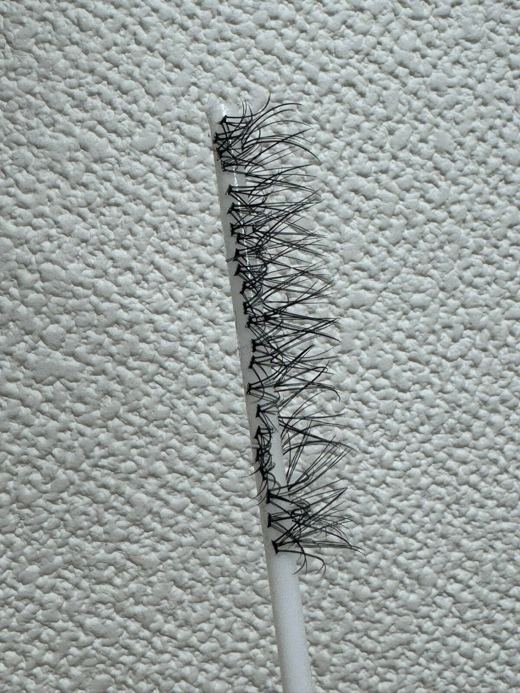
LIMO | くらしとお金の経済メディア · 07 Nov

ねとらぼ · 07 Nov
 11/10 08:00
🗼 横浜
11/10 08:00
🗼 横浜
株式会社GRACEのプレスリリース 〜ブランドごとの限定デザイン全2種類。UNI COFFEE ROASTERY BON BON
株式会社裕源のプレスリリース 【添加物不使用＋天然酵母長時間発酵】 手作り冷凍パン首都圏発の店頭販売 【健康を第一に素材と製法に
横浜バニラ株式会社のプレスリリース 「SWEET ENTERTAINMENT」を胸に、【国民的ギフトスイーツ】をつくります。 ギ
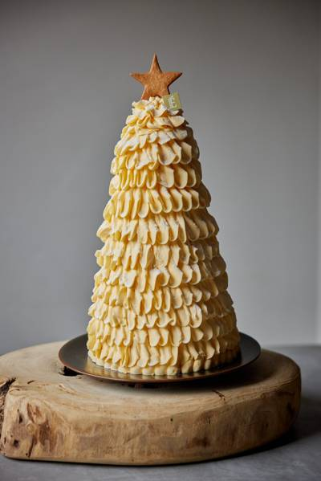
11/09 15:00 🗼 東京エシレが紡ぐバターの造形美 フランス産A.O.P.認定発酵バター「エシレ」の専門店『エシレ・メゾン デュ ブール』では、クリス
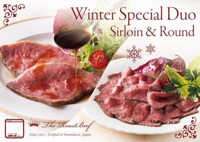
11/09 14:00 🗼 鎌倉株式会社レストラン鎌倉山のプレスリリース 鎌倉山の『伝統の美味』をこの一箱に。黒毛和牛サーロインと黒毛和牛モモ、二つの極上の味わ
ENGAWA株式会社のプレスリリース セレクトショップには「大館曲げわっぱ」、減塩サポート食器「エレキソルト」など4ブランドの新
チロルチョコ株式会社のプレスリリース チロルチョコ公式Instagram、YouTube、TikTok、Xにて 11月9日（月）
株式会社ドールのプレスリリース 2026年11月10日（火）より順次、全国のファミリーマートにて数量限定で販売 株式会社ドール
株式会社オレンジページのプレスリリース 株式会社オレンジページ（東京都港区）は、新刊『食事＆自律神経を整えて 薬に頼らず自分で下
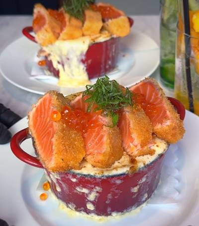
11/09 09:00 🗼 中目黒株式会社ARKのプレスリリース 11月1日より期間限定、サクッと揚げたレアサーモンといくらを豪快にのせた「レアサーモンカツのボル
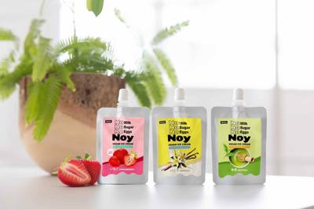
11/10 01:43 ❓ 不明think Lab株式会社のプレスリリース 常識を覆す新感覚！9大アレルゲンフリーで「本当の意味で、みんな一緒に楽しめる」フリー
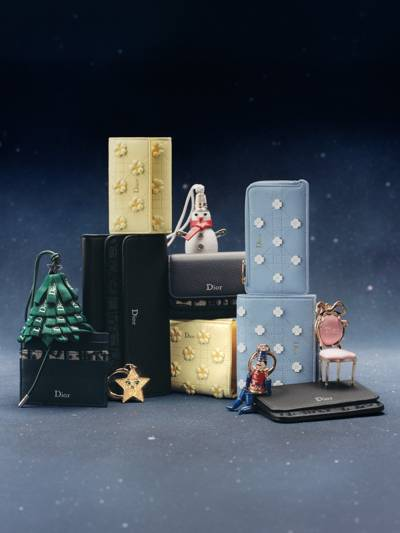
11/09 15:31 ❓ 不明クリスチャン・ディオール合同会社のプレスリリース © HEIKKI KASKI 12月16日の特別な日を祝して。メゾン ディオー
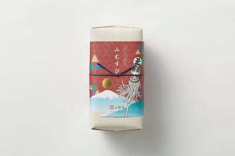
11/09 15:30 ❓ 不明有限会社春華堂のプレスリリース 11月9日(月)より 販売開始 ニ種十枚入 ニ種二十枚入 うなぎパイなどの菓子製造・販売を手がけ
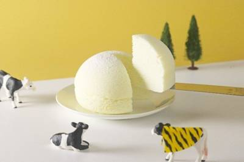
11/09 15:20 🚄 梅田朝霧乳業株式会社のプレスリリース 2026年11月10日（火）〜／阪神梅田本店1階 朝霧乳業株式会社（本社：静岡県富士宮市、代表
株式会社すかいらーくホールディングスのプレスリリース 株式会社すかいらーくホールディングスが運営する「すかいらーく公式通販ショ
キャンペーン期間：２０２６年１１月３日（火）～１１月１６日（月） ミニストップは、開催中の「韓国グルメフェア」対象の新商品を新
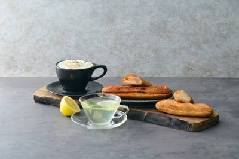
11/09 15:00 ❓ 不明株式会社オーリのプレスリリース ～米粉のハードパン2種がリニューアル。季節限定のホットドリンクも発売～ ベーカリーブランド「C
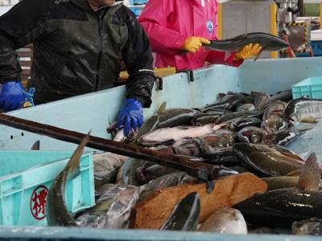
11/09 15:00 🚄 北海道株式会社しゃけをのプレスリリース 地元企業「しゃけを」が伝える漁業の現実と、未利用魚の価値を地域産業につなげる挑戦 北海道標津町
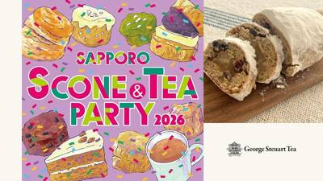
11/09 14:11 🚄 札幌株式会社味とサイエンスのプレスリリース 11月19日（木）から24日（火）まで、丸井今井札幌本店 大通館9階 催事場に出店。茶葉
1人でも、家族とも、食べたい分を調整できる 便利な個包装入りシェアパック 株式会社モントワール(本社：東京都港区、代表取締役社長
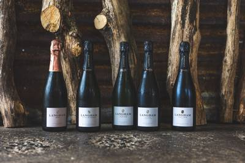
11/09 14:00 ❓ 不明株式会社フィラディスのプレスリリース 評論家から「まさにセロス」と絶賛される英国スパークリングワインの注目生産者。徹底した低介入
株式会社ライフコーポレーションのプレスリリース 神戸・ベイエリアでお過ごしの皆様にナチュラルライフスタイルをご提案♪ “おいし
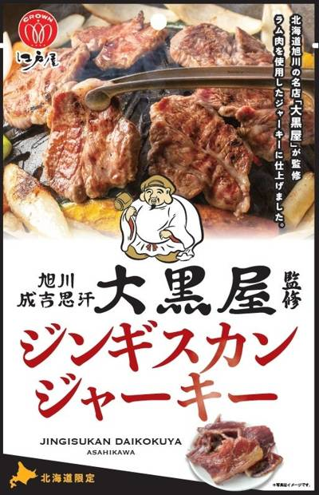
11/09 13:00 🚄 北海道株式会社江戸屋のプレスリリース ラム肉を使用し”大黒スパイス”の味わいを再現！2026年11月10日より北海道限定で新発売！！
株式会社風美庵のプレスリリース 株式会社風美庵（代表取締役：河越久）は、博多織をモチーフに開発した新商品「はかたんたん」を紹介す
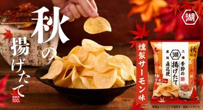
11/09 13:00 🌐 全国株式会社湖池屋のプレスリリース 秋の夜長に、ちょっと贅沢な晩酌を。 株式会社湖池屋（社長：佐藤章）は、生産から3日以内に出荷する
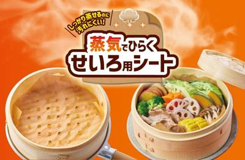
11/09 12:30 ❓ 不明東洋アルミエコープロダクツ株式会社のプレスリリース 面倒な穴あけ不要。独自の「十字スリット構造」で、蒸気を通しながらせいろの汚れ
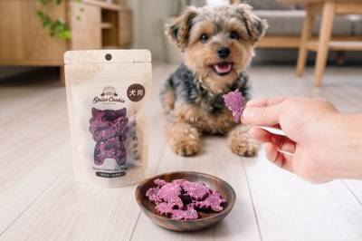
11/09 12:00 🚄 沖縄株式会社あしびかんぱにーのプレスリリース 愛らしいシーサーのかたちはそのまま。沖縄県産の紅芋と黒糖を使った、保存料・着色料・香料
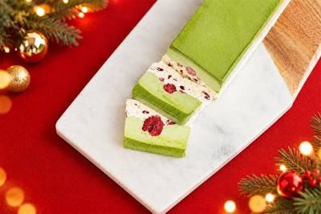
11/09 12:00 ❓ 不明株式会社Sweets HDのプレスリリース 濃厚な抹茶、まろやかな抹茶、プレーン層の異なる味わい。3層仕立ての構成での味わいの変
株式会社ネオトレックのプレスリリース 猫モチーフのお菓子と雑貨を展開する「NEKO LAB（ネコラボ）」は、冬限定フェア「NEK
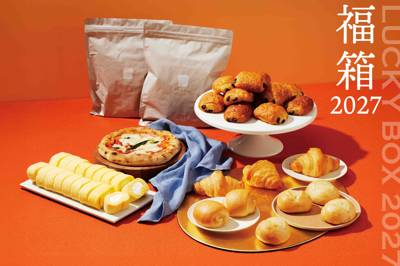
11/09 12:00 🌐 全国株式会社 スタイルブレッドのプレスリリース 〜昨年即完売の「福箱2026」に続く新春限定展開、オンラインストア未発売のパン・オ・
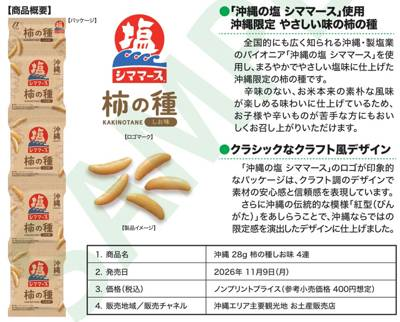
11/09 12:00 🚄 沖縄株式会社青い海のプレスリリース ～塩づくりの枠を超えて広がるシママースブランド。辛味を抑えたやさしい塩味～ シママース本舗（株式
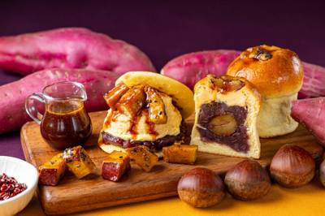
11/09 11:30 ❓ 不明株式会社フジノネのプレスリリース 和洋折衷スイーツを提供するあんことバターの専門店『又一庵謹製 熱海ばたーあん』(所在地：静岡県
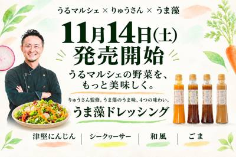
11/09 11:00 🚄 沖縄株式会社AlgaleXのプレスリリース うるま市の料理人・りゅうさんが監修。地元野菜のおいしさを引き立てる、うるま生まれのドレッ
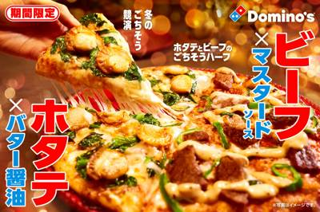
11/09 11:00 ❓ 不明株式会社ドミノ・ピザ ジャパンのプレスリリース ～チーズ20％増量後、初のクリスマスに贈る冬の自信作～ 株式会社ドミノ・ピザ ジ
スターバックスコーヒージャパン株式会社のプレスリリース スターバックス コーヒー ジャパン株式会社（本社：東京都品川区、代表取締
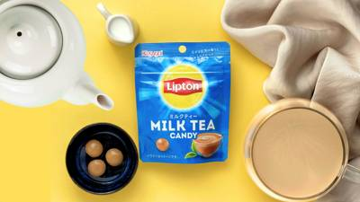
11/09 11:00 🚄 愛知春日井製菓株式会社のプレスリリース ～11月9日（月）より全国の一部コンビニエンスストアで発売。リプトン公式Xにて「リプトンフレ
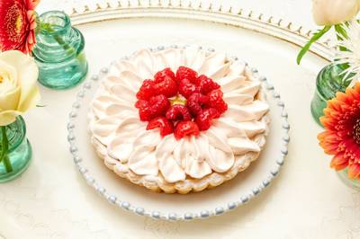
11/09 11:00 ❓ 不明キルフェボン株式会社のプレスリリース 販売期間：2026年11月20日（金）〜22日（日） 全12店舗 タルト専門店「キル フェ
株式会社オールハーツ・カンパニーのプレスリリース ～全国の「ねこねこ」併設店舗にて2026年11月中旬より順次販売開始～ 全国に
株式会社帝国データバンクのプレスリリース 「豆腐店」の倒産・休廃業解散動向（2026年1-10月） 株式会社帝国データバンクは、
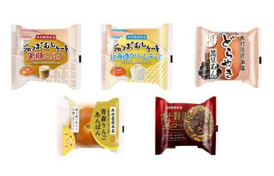
11/09 10:00 ❓ 不明株式会社木村屋總本店のプレスリリース トップ3にジャンボむしケーキ「黒糖ミルク」「北海道クリームチーズ」、「どらやき 黒豆あん」
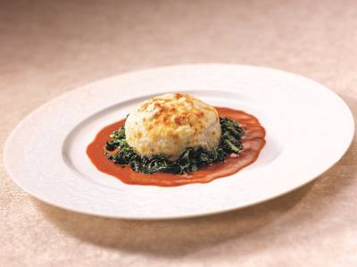
11/09 10:00 🚄 新潟株式会社帝国ホテルのプレスリリース ホテルショップ「ガルガンチュワ」開店55周年記念 1975年エリザベス2世女王陛下訪日時の名
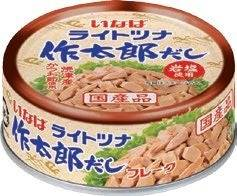
11/09 10:00 ❓ 不明いなば食品株式会社のプレスリリース 風味豊かな特製だしと岩塩で仕上げたノンオイルツナフレーク。ツナの旨味が溶け込んだ液汁ごと、い
株式会社お茶村のプレスリリース まだ知らない抹茶のおいしさに出会える場所へ。 株式会社お茶村（本社：福岡県八女市、代表取締役：大
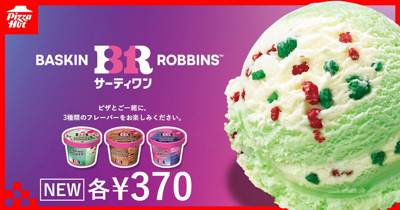
11/09 09:10 🌐 全国日本ピザハット株式会社のプレスリリース 〜2026年11月9日（月）より、全国のピザハット店舗でご注文いただけます！〜 日本ピ
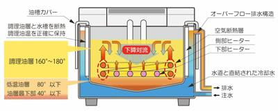
11/09 11:00 ❓ 不明クールフライヤー株式会社のプレスリリース 油ハネや油の劣化を抑える特許４件と、揚げカス自動排出・自動給油関連特許２件を取得、それ
ワタミ株式会社のプレスリリース ミライザカ87店舗・三代目鳥メロ98店舗で11月中旬よりオリジナル米粉メニュー３品を11月中旬よ
株式会社モンテローザのプレスリリース 2026年11月10日（火）～12日（木）の3日間は料理もドリンクも店内でお召し上がりのメ
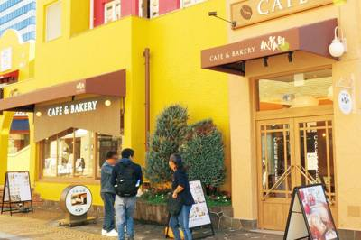
11/09 11:00 🗼 東京株式会社大庄のプレスリリース 株式会社大庄（東京都大田区／代表取締役社長：平 了壽）は、2026年11月10日（火）、東京都・多
株式会社泉屋東京店のプレスリリース 来年創業100周年を迎える老舗の味に加え、新たな商品も展開予定。 株式会社泉屋東京店(東京都
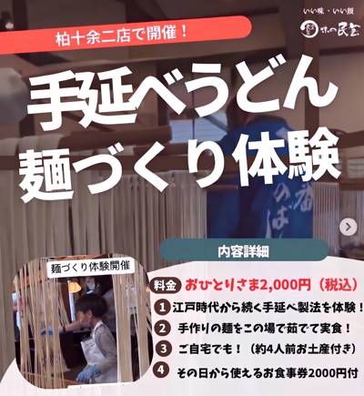
11/09 10:00 🗼 千葉株式会社サガミホールディングスのプレスリリース ～「味の民芸」で延ばしてつくる”手延べ製法”の「麺づくり体験」～ 株式会社サガ
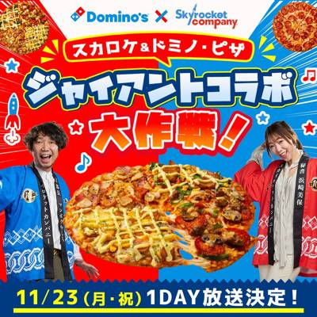
11/09 18:30 ❓ 不明株式会社エフエム東京のプレスリリース 11/23(月・祝)17:00-20:00 放送 11/12(木)～本部長＆秘書セレクト特
JA全農の産直通販JAタウンのプレスリリース ～ 「北の鍋特集」も同時開催中！ ～ ＪＡ全農が運営する産地直送通販サイト「ＪＡ
 11/09 14:00
❓ 不明
11/09 14:00
❓ 不明
吉本興業株式会社のプレスリリース ミライザカ・三代目鳥メロにてオリジナル米粉メニューを期間限定提供 東京都が推進する国産米粉消費
株式会社シン・コーポレーションのプレスリリース 株式会社シン・コーポレーション（本社：東京都港区、代表取締役社長：川口 範）が
株式会社グループセブ ジャパンのプレスリリース 先着1,000名様にQUOカードPay 3,000円分をプレゼント 株式会社グ
TPS株式会社のプレスリリース 全国50店舗体制へ拡大中！自分専用の一杯が作れるスタイルで支持される大分発の「福恩麻辣湯」がピエ
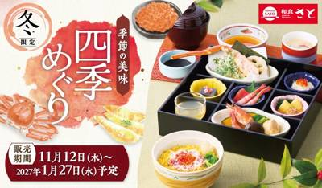
11/09 11:00 ❓ 不明SRSホールディングス株式会社のプレスリリース 旬の味覚をたっぷり使った期間限定御膳で冬ならではのぜいたく感をお楽しみください。
株式会社ガーデンのプレスリリース 株式会社ガーデン(本社:東京都新宿区 代表取締役社長:川島賢 以下「当社」)が運営する「山下
株式会社COGNOSPHEREのプレスリリース 11月18日(水)より期間限定でスタート！「Myマクドナルド リワード」では、「
株式会社さすがやのプレスリリース ～金・プラチナ 店頭買取価格相場から最大30％アップ～ 買取専門店を全国に展開する株式会社さ
雪印ビーンスターク株式会社のプレスリリース ～さらに、抽選にはずれた方の中から300名様にお試しサンプルをプレゼント～ 雪印メグ
株式会社富士達のプレスリリース ～やわらかハラミ350円、よだれレモンサワー190円など、年末前の焼肉をお得に楽しめる期間限定キ
株式会社さすがやのプレスリリース ～金・プラチナ 店頭買取価格相場から最大30％アップ～ 買取専門店を全国に展開する株式会社さ
きのとやのプレスリリース 11月10日(火)AM10：00よりご予約受付開始！ 洋菓子「きのとや」（本社：北海道札幌市 代表取締
株式会社こじまのプレスリリース 11月8日〜12月30日、ディナー限定。画面提示で1組2品まで 株式会社こじまが展開する「焼肉こ
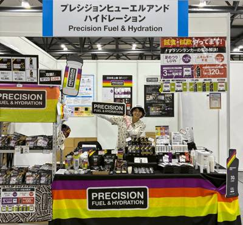
11/09 09:30 🚄 神戸2026年11月13日（金）と11月14日（土）の2日間、神戸国際展示場3号館にて開催 株式会社トータルヘルスコンサルティング（
学校法人立正大学学園のプレスリリース 立正大学学生健康保険互助会(以下、本互助会)（東京都品川区、学長：北村行伸）は入学時に学生
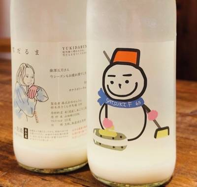
11/09 16:53 🗼 東京ジャパンテイスト株式会社のプレスリリース サケラボトーキョー限定提供の「仙禽×藤澤五月 限定ver.雪だるま」をコースご利用のお
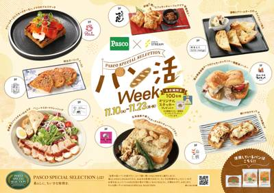
11/09 15:00 🗼 渋谷敷島製パン株式会社のプレスリリース 2026年11月10日（火）から11月23日（月）までの14日間限定！ 敷島製パン株式会社（
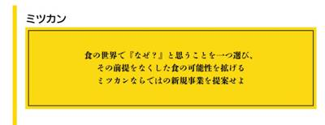
11/09 14:00 ❓ 不明株式会社Mizkan Holdingsのプレスリリース 第13回大会での、ミツカンの企
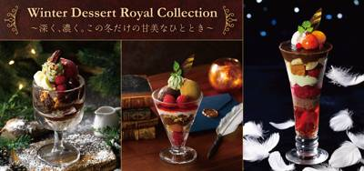
11/09 13:00 ❓ 不明ロイヤルホールディングス株式会社のプレスリリース 〜物語と共に楽しむ冬のデザートを2026年11月25日（水）より販売開始～
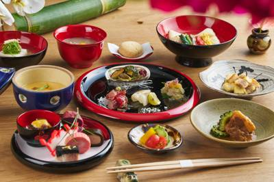
11/09 10:00 🚄 沖縄ハイアット リージェンシー 瀬良垣アイランド 沖縄のプレスリリース ～首里城正殿の復元で琉球の歴史と文化に注目が集まるこの秋、沖
もぐっと北海道のプレスリリース ～北海道グルメインフルエンサー・りこモグ×新人AD・りかの凸凹コンビが、 道内を食べ歩き＆体験～
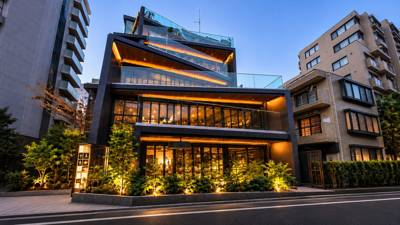
11/09 23:42 🗼 東京有限会社Coltiveのプレスリリース 芦屋から東京へ。新たな3名の和牛生産者とともに、自家製バンズや新しい調理スタイルを取り入
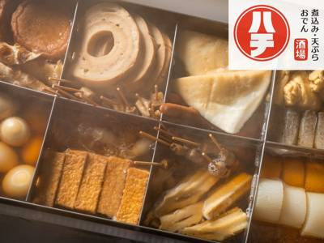
11/09 15:40 🗼 上野株式会社DDグループのプレスリリース ブランド卵「十六代真っ赤卵」とごはん食べ放題つきの名物・牛すじ煮込み＆京出汁おでんを味わう
株式会社アレグロのプレスリリース ヨーロッパ・バルト三国のラトビア発、こだわりの食品ブランド「SWEECO」と「UGLY CAK
株式会社マーケティング研究協会のプレスリリース 株式会社マーケティング研究協会は2026年11月26日オンラインセミナー「食品メ
株式会社物語コーポレーションのプレスリリース 株式会社物語コーポレーション(本社:愛知県豊橋市/代表取締役社長:加藤 央之)が運
エステールホールディングス株式会社のプレスリリース ヴィレッジヴァンガードダイナー、鎌倉駅徒歩圏内に新店舗オープン。和牛バーガー
株式会社ラショナル・ジャパンのプレスリリース ブースで展開される自社製品 iVario Pro ブースで展開される自社製品 iC
株式会社シュクレイのプレスリリース もう出会えない。ブランド誕生以来、愛され続けたロングセラー商品。 株式会社シュクレイ（代表取
パルシステム生活協同組合連合会のプレスリリース 特別メニュー「秋穫（しゅうかく）御膳」 生活協同組合パルシステム千葉（本部：千葉
パルシステム生活協同組合連合会のプレスリリース 消費者の「選ぶ権利」「食の安全性」を守るために 生活協同組合パルシステム神奈川（
株式会社焼肉坂井ホールディングスのプレスリリース ～ あなたの知らなかった「村さ来」の味もご堪能ください ～ 居酒屋「村さ来」で
株式会社オークラ ニッコー ホテルマネジメントのプレスリリース クリスマス・年始限定の特別メニューもご用意 川崎日航ホテル（所在
株式会社おいしいファンディングのプレスリリース 味わって、気に入ったらお取り寄せ。店舗での食体験とECをつなぐ「お試しランチ店」
ジローレストランシステム株式会社のプレスリリース リストランテ ダノイ高輪にて12月23日（水）～12月25日（金）の3日間ご提
株式会社GORILLA COMPANYのプレスリリース 忘年会・新年会、早期予約特典をご案内。6名以上の早期予約で10%OFF、
 11/09 09:52
🗼 東京
11/09 09:52
🗼 東京
株式会社ケイシイシイのプレスリリース チーズスイーツ専門店「Now on Cheese♪（ナウ オン チーズ）」（株式会社ケイ
株式会社ケイシイシイのプレスリリース JR新宿駅構内で展開しているブランド「果実とバターcanarina」がルミネ立川に期間限定
ニラックス株式会社のプレスリリース 【実施期間】2026年11月12日（木）～ ※平日限定 ニラックスのHPはこちら ～世代を超
ニラックス株式会社のプレスリリース 【実施期間】2026年11月12日（木）～ ニラックスのHPはこちら ～世代を超えて楽しめる
株式会社グローバルダイニングのプレスリリース 〜渋谷の夜景とともに味わう至高のクリスマスディナー＆華やかな冬のティータイム〜 至
NTカンパニー株式会社のプレスリリース 2027年2月の稼働を予定し、医療・福祉施設への安定供給体制を強化。あわせて、選べる8つ
SRSホールディングス株式会社のプレスリリース 「ジューシームネからあげオリジナルカップ」をオープンから3日間限定販売！ からあ
株式会社シンアイ産業のプレスリリース 浄水が当たり前になった今、次は「水の味」へ。県外で良好な結果が沖縄の水質では再現せず、4年
株式会社JR東海ホテルズのプレスリリース それぞれのレストランの魅力が詰め込まれた、クリスマスだけの特別メニュー。料理、空間、サ
株式会社おいもやのプレスリリース 【12月10日まで早割実施中】スポンジを焼かずに手軽にデコレーション！3歳ごろから楽しめる親子
株式会社 佐賀玉屋のプレスリリース 海鮮弁当から人気スウィーツ、熱々ラーメンまで。北海道の味覚を楽しむ13日間！ 佐賀玉屋（本
株式会社珉珉本店のプレスリリース 〜厳選した新潟産コシヒカリの新米ごはんが、おかわり無料！〜関東11店舗・関西8店舗で実施！ 昭
ベースフード株式会社のプレスリリース 完全栄養※1の主食等を開発・販売するベースフード株式会社（本社：東京都港区、代表取締役：橋
株式会社サンパークのプレスリリース 鶏の旨みを味わう、心も身体も温まる冬の限定メニュー。あんかけうどんや水炊き、京風すき焼き丼な
吉野家HDグループ/株式会社シェアレストランのプレスリリース 中国人店主が日本で挑む「日常価格のガチ中華」 渋谷に続き、四谷三丁
阪神電気鉄道株式会社のプレスリリース 阪神電気鉄道株式会社（本社：大阪市福島区、社長：久須勇介）が運営する阪神甲子園球場及び甲子
株式会社アップライジングのプレスリリース 山崎12年を5口、山崎シングルモルトを13口、白州・響 JAPANESE HARMON
株式会社サンパークのプレスリリース ～11月11日より、冬の京都の味覚をあたたかな鍋御膳で～ 京都で1970年に創業した鶏料理専
株式会社ポトマックのプレスリリース 昼は自然薯と炊きたての釜ごはん・釜飯を味わう新しい御膳と個室会席。夜は名物の自然薯鍋と灘の酒
キユーピー株式会社のプレスリリース キユーピー株式会社は2026年11月14日(土)に予定しておりました「深谷テラス キユーピー
株式会社SAKIGAKEホールディングスのプレスリリース 「川西店」のリニューアルオープンを記念し、すべてのラーメンを100円引
株式会社 大丸松坂屋百貨店のプレスリリース ■オープン：2026年11月～12月にかけて順次 ■場所：大丸福岡天神店 東館B2食
西日本旅客鉄道株式会社のプレスリリース ほんまもんの駅弁屋がお届けする全国人気駅弁大会 株式会社ジェイアール西日本フードサービス
株式会社ロイヤルホテルのプレスリリース ［提供期間］2026年12月30日（水）～2027年1月3日（日） ※「日本料理 鯉城」
株式会社オレンジページのプレスリリース 株式会社オレンジページ（東京都港区）より、2025年11月刊行の甲斐みのり『愛しの京都〈
株式会社パソナグループのプレスリリース 禅リトリート施設「禅坊 靖寧」では、淡路島の大自然に包まれながら、1年の疲れを癒し、心身
アサヒビール株式会社のプレスリリース 新たに「プレイヤー部門」「マスター部門」を設置 エノテカ株式会社（本社：東京都港区、社長
琵琶湖汽船株式会社のプレスリリース 多彩なブッフェを楽しむ「ミシガン」、大人のディナークルーズ「ビアンカ」 琵琶湖汽船株式会社
株式会社 重慶飯店のプレスリリース 三段スタンドに秋の主菜、薬膳粥も。食事としても満たされるランチタイムのひととき 株式会社重
ウッドデザインパーク株式会社のプレスリリース 会員登録・アプリ不要、ドリンク1杯で席の時間を気にせず使え、Wi-Fi・電源も完備
～エチオピア産3種の比較では47.5％がCOE入賞豆以外を選択～ 京都のコーヒーロースター「SCENE FACTORY COFF
キャピタル・ゼンリン株式会社のプレスリリース 「一緒に食べよう」十勝のこだわりを、大切な人と囲む食卓へ キャピタル・ゼンリン株式
ペルノ・リカール・ジャパン株式会社のプレスリリース ペルノ・リカール・ジャパン株式会社（本社：東京都文京区 代表取締役社長：ブル
株式会社Antwayのプレスリリース 〜サービス開始から約半年で達成。日本で培った手料理サブスクを現地で製造・提供し、海外展開を
オイシックス株式会社のプレスリリース ～ 保育現場の時間・ノウハウ・予算の壁を越えて、毎日の給食から無理なく始める方法を提案～
株式会社FOOD & LIFE COMPANIESのプレスリリース ＜11月11日（水）より全国のスシローにて販売開始＞
ユーアールエー株式会社のプレスリリース ～北から南まで、淡路島の玄関口と国営公園を舞台に、地域名産・淡路島玉ねぎの魅力を発信～
株式会社movのプレスリリース いま訪日客に人気の飲食店TOP30を発表！ インバウンドビジネスメディア「訪日ラボ」及び 店舗向
日東ベスト株式会社のプレスリリース より快適でスムーズなお買い物体験を実現 株式会社シロッコさがえ（代表取締役社長：佐藤光義）は
株式会社弁才天のプレスリリース 「弁才天」は、ブラックフライデーに合わせ、竹炭を使用した「黒いフルーツ大福」を、2026年11月
株式会社フォーシーズのプレスリリース 期間限定：2026年11月9日（月）～2027年2月14日（日） 株式会社フォーシーズ（
株式会社祇園辻利のプレスリリース 〜クリスマスを彩る、濃厚な抹茶の味わいを楽しむ特別な一品〜 1860年創業、京都・祇園からお茶
一般社団法人発酵性食物繊維普及プロジェクトのプレスリリース 毎日のくらしの中で、いつもの食事に発酵性食物繊維をプラス３g 一般
株式会社吉野家ホールディングスのプレスリリース 株式会社吉野家（本社：東京都中央区、代表取締役社長：成瀨哲也）は、11月10日（
株式会社近鉄・都ホテルズのプレスリリース ウェスティン都ホテル京都（京都市東山区粟田口華頂町１番地）は、2026年12月1日から
株式会社メタジェンのプレスリリース 〜身体と食への意識を検証〜 株式会社メタジェン（本社: 山形県鶴岡市、代表取締役社長 CEO
株式会社紀ノ國屋のプレスリリース クリスマスの贈り物やおやつにぴったりな限定バッグや自家製クッキーに加え、クリスマスには欠かせな
特定非営利活動法人おてらおやつクラブのプレスリリース 認定NPO法人おてらおやつクラブ（奈良県田原本町、代表理事：松島靖朗）は、
全国農業協同組合連合会 兵庫県本部のプレスリリース ＪＡ丹波ひかみ管内の旬の味覚を神戸で堪能！ 全国農業協同組合連合会兵庫県本部
イージーリンク株式会社のプレスリリース 動物性原材料・白砂糖不使用。ギルトフリーなお菓子として、手土産に人気のある商品です。 イ
パルシステム生活協同組合連合会のプレスリリース 異業種連携で始動する新たな流通スキーム パルシステム生活協同組合連合会（本部：東
株式会社東筑軒のプレスリリース ～ 北九州の街を、世界大会の応援拠点に～ 1921年（大正10年）創業、折尾駅名物「かしわめし」
株式会社関屋リゾートのプレスリリース 皮和えから雑炊まで全7品。澄んだ冬の空気と温泉に癒やされる別府で、旬のふぐを味わう贅沢な夜
楽彩株式会社のプレスリリース RAKUSAI 11月9日（月）予約販売スタート d130004-163-64efee6c8c26
株式会社物語コーポレーションのプレスリリース 株式会社物語コーポレーション(本社:愛知県豊橋市/代表取締役社長:加藤 央之)が展
MERCER OFFICE株式会社のプレスリリース – 2026年11月16日(月)より販売開始 – 生
株式会社MatchaEducationCenterのプレスリリース タイ・スペインに続く、MECとして第三弾となる連携として北米
株式会社三万石のプレスリリース 新コンセプトは「守り続ける。」 1960年に誕生した菓子のエンブレム・パッケージを一新 新たなブ
薬糧開発株式会社のプレスリリース 若者の“食を選ぶ力”を育む商品・サービスを共同企画。第1回グループ活動では、未病・食品表示のレ
スーパープロジェット株式会社のプレスリリース 「サンペレグリノ ヤングシェフアカデミー 国際料理コンクール2026」で日本人シェ
焼肉福ちゃん学研都市ひびきの店のプレスリリース 昔ながらのアルミパウチが秘めた「知られざる力」とは。福岡県北九州市の「焼肉福ちゃ
グリーンランドみずほ株式会社のプレスリリース 10月売上は前月の2.5倍、看板3商品でカフェ売上の約67％。原価約3倍の黒豆ソフ
株式会社萌のプレスリリース Gelato MinNa（ジェラート ミンナ）から冬を楽しむスイーツ Gelato Coppa &#
株式会社タカノフルーツパーラーのプレスリリース 株式会社タカノフルーツパーラー（代表取締役社長 髙野吉太郎、本社東京都新宿区）は
株式会社 FS.shakeのプレスリリース 株式会社FS.shake（本社：東京都豊島区）は、11月9日（月）より、「個室完備
株式会社FTG Companyのプレスリリース お客さまにより楽しい時間を過ごしていただくため、全店で2か月間取り組んだ「愛され
イオン株式会社のプレスリリース 自家製つぶあんの店「紫あん」 全国のショッピングセンターで飲食店を展開する株式会社イオンイーハー
株式会社梅林堂のプレスリリース 埼玉県公式アンバサダー３名とパッケージコラボ一般投票で決定した埼玉愛あふれるパッケージを商品化。
ニッコー株式会社のプレスリリース 発売日に太田シェフによる「REMASTERED COOKING CLASS」の開催も決定 洋食
株式会社にしき食品のプレスリリース 防災庁発足で高まる事前防災と備蓄、温めないレトルトの試食や災害時に役立つ豆知識を体感 〈第1
株式会社髙島屋のプレスリリース 韓国・台湾・タイなどの人気グルメが集結！ビリヤニ、キンパ、スンドゥブ、パイナップルケーキなどアジ
くら寿司株式会社のプレスリリース お客様をもっと笑顔に！関西発企業としてタッグ結成！ くら寿司×よしもと漫才劇場コラボキャンペー
 11/10 08:50
🗼 東京
11/10 08:50
🗼 東京
株式会社Cqreeのプレスリリース 缶・瓶アソートセットから生ビールサーバー・出張フリードリンクまで。オードブルデリバリー時でも
味の素株式会社のプレスリリース 5kmウォークやリレーマラソンなど多彩な種目を用意11月19日（日）までエントリー受付中 味の素
株式会社NEO FLAG.のプレスリリース 2026年9月の現地監査を経て適合判定。取得後も教育・検査・記録・改善を継続 ケータ
～伝統料理や雑貨、音楽を楽しむ入場無料の3日間～ チェコ政府観光局は、2026年12月4日(金)～6日(日)の3日間、二子玉川ラ
The Edrington Group Ltd.のプレスリリース ― 世界的グラフィックデザイナー、デヴィッド・カーソンとザ・マ
株式会社KIBOのプレスリリース be GELATO、11月21日（土）に東京・森下で「Parfait Stand｜KASAMA
パルシステム生活協同組合連合会のプレスリリース フードドライブの協力も呼びかけ 生活協同組合パルシステム東京（本部：東京都新宿区
株式会社L.B.Marketのプレスリリース ゾンビになっても食らいつく、“愛しい娘”の大好物。スクリーンの中のチュロスが、日本
株式会社ビーリンクのプレスリリース アクアリウムクリエイター集団UWSとのグループシナジーを結集。大人の遊び場に幻想的なエンター
ニラックス株式会社のプレスリリース 【実施期間】2026年11月12日(木) ～ 2026年12月9日(水) 本格中華と選べる拉
学校法人麴町学園のプレスリリース ～麴町学園女子高等学校の探究学習「みらい科」。田植え体験や地域の歴史から生まれた商品を11月1
株式会社ホテルマネージメントジャパンのプレスリリース ～12月24日・25日限定のマジック＆ジャズステージやクリスマス特別メニュ
株式会社LDH kitchenのプレスリリース 株式会社LDH kitchenが運営し、EXILE TETSUYAがプロデュース
アメリカ大豆輸出協会のプレスリリース 世界需要をけん引するサステナブルで高品質なアメリカ大豆の価値創造 アメリカ大豆輸出協会（
浜松磐田信用金庫のプレスリリース 【春華堂のお菓子が当たる】浜松いわた信用金庫公式インスタグラム「はみぃぐらむ」と「BIKKUR
よつ葉乳業株式会社のプレスリリース よつ葉乳業株式会社（本社：北海道札幌市、代表取締役社長：井出 元郎）は、2026年11月2
キリンホールディングス株式会社のプレスリリース 公益財団法人日本サッカー協会（以下、JFA）オフィシャルトップパートナー※1の
エイ・エイ・ピー・シー・ジャパン株式会社のプレスリリース 大山の冬景色や温泉とともに、家族で楽しむ年末年始のリゾートステイを提案
ワンズトライン株式会社のプレスリリース 『BONTEMPS 福岡薬院店』12月5日(土)オープン 韓国で人気のカフェブランド『B
心幸ホールディングス株式会社のプレスリリース 子ども会・地域行事・社内イベントなどに おすすめの詰め合わせから選ぶプランと、好き
キャニオンバイシクルズ・ジャパン株式会社のプレスリリース トライアスロン世界最高峰の舞台で8時間13分41秒・19位。レース前日
株式会社芝パークホテルのプレスリリース ～「まるで泊まれる美術館」で味わう、心弾む冬のティータイム ～ 館内で400点以上のア
カルビー株式会社のプレスリリース ～約1,000名が来場、食育授業や7つの体験ブースで交流～ カルビー株式会社（本社：東京都千代
株式会社JR西日本ホテルズのプレスリリース 気品漂うMIKIMOTOプレートとともに、愛らしいスイーツを堪能 12月1日～12月
 11/09 12:33
🚄 東北
11/09 12:33
🚄 東北
LH 株式会社のプレスリリース 出張カキ小屋 牡蠣奉行（かきぶぎょう）：牡蠣小屋実行委員会 【協賛】サッポロビール株式会社 東北
東神開発株式会社のプレスリリース 【大阪高島屋】“バナナの王様”「甘熟王」を味わい尽くす「甘熟王バナナフェスタ！」を開催 ◆11
有限会社丸産のプレスリリース 浜松の街中養蜂から始まった新しい酒づくり。養蜂から醸造までを一貫して手がけ、蜂蜜を通じた地域産業の
佐賀県のプレスリリース この度、都内の人気かき氷店「サカノウエカフェ」において、佐賀県産「釜炒り抹茶」とブランドみかん「さが美
株式会社クオカードのプレスリリース 手間なく贈れて気持ちが伝わるデジタルギフト『QUOカードPay（クオ・カード ペイ）』 株式
株式会社セブン‐イレブン・ジャパンのプレスリリース ～11月11日（水）には「セブン‐イレブン冠試合」も開催～ 株式会社セブン
株式会社SANKO MARKETING FOODSのプレスリリース 今年はさらに充実した「浜松パワーフード」を取り揃え、徳川家康
株式会社 大丸松坂屋百貨店のプレスリリース 開催日：2026年11月18日(水) → 11月29日(日) 期間限定で登場する愛知
株式会社アトムのプレスリリース コロワイドグループの株式会社アトム（本社：神奈川県横浜市 代表取締役社長：植田剛史）が展開する回
株式会社名鉄ホテルホールディングスのプレスリリース 国内外で活躍するフラワーデザイナー・滝澤久美子氏を講師に迎え、自分流のオリジ
株式会社テンポスホールディングスのプレスリリース 「尼崎焼そばセンター」「尼崎やきそば本舗 船場店」の2店舗で11月11日（水）
パルシステム生活協同組合連合会のプレスリリース 宅配ならではのリサイクルの仕組も紹介 生活協同組合パルシステム茨城 栃木（本部：
一般社団法人 日本自動車連盟のプレスリリース スタッフのサポート付きなので、調理や焚き火が初めての方、お子さま連れの方も安心して
エースシステム株式会社のプレスリリース 「過熱水蒸気で食革命を起こす」を掲げるエースシステム株式会社（本社：大阪府和泉市、代表取
スマホ裏にもぴったりなサイズ！吉兵衛の人気かつ丼3種がステッカーになって登場、11月1日(日)よりプレゼントキャンペーン開始 株
株式会社GYO-TENのプレスリリース 餃子パラダイス2026 in BOATRACEびわこにて群馬の餃子専門店【爆じゅう餃子
カフェ・カンパニー株式会社のプレスリリース 「伊右衛門カフェ」国内10店舗目は広島に出店。 日本国内外において「コミュニティの創
ボンディッシュ株式会社のプレスリリース “おいしい一皿で絆をつなぐ”社員食堂・ケータリングの企画運営を行うボンディッシュ株式会
ジェイアール東海フードサービス株式会社のプレスリリース ハイハイレースやグッズ販売、ぴよりん手作り体験など、親子で楽しめるイベン
株式会社オフィスフェリスタのプレスリリース 海外出店国の開拓に向け、ブランドレギュレーションの標準化・資料化支援を開始。また、8
ニラックス株式会社のプレスリリース 【実施期間】2026年11月12日(木) ～ 2026年12月8日(火) ニラックスのHPは
ニラックス株式会社のプレスリリース 【実施期間】2026年11月12日(木) ～ 2026年12月8日(火) ニラックスのHPは
株式会社阪急阪神百貨店のプレスリリース 『ミルクの本』をテーマに、東京・北海道の人気店からイベント限定メニューが登場するほか、各
象印マホービン株式会社のプレスリリース 「たくろう」赤木さんの好物＆「たくろう万博」メインキャラクターにちなんだ限定2種 象印マ
サッポロビール株式会社のプレスリリース 冬の景色が広がるYEBISU BREWERY TOKYOに、総横幅15m超えの壮麗ないけ
濵田酒造株式会社のプレスリリース ～芋焼酎だいやめが広げる、新たな晩酌文化「デザートペアリング」～ 浜田酒造株式会社(本社：鹿児
株式会社サンクゼールのプレスリリース 東海地方の喫茶店文化に着想。珈琲の苦味と芳醇なブランデーを効かせ、甘さを抑えたリッチな味わ
ペルノ・リカール・ジャパン株式会社のプレスリリース ABSOLUT KAWS ペルノ・リカール・ジャパン株式会社（本社：東京都文
朝日酒造株式会社のプレスリリース ～日経、FT共催の国際会議で2年連続提供～ 朝日酒造株式会社（本社：新潟県長岡市、代表取締役社
サントリーホールディングス株式会社のプレスリリース サントリー（株）は、Ｊリーグ（公益社団法人日本プロサッカーリーグ）との共同取
株式会社信濃屋食品のプレスリリース ドイツ・ミュンヘンを拠点とする「Wu Dram Clan」のボリス氏を講師に迎え、ウイスキー
株式会社プロントコーポレーションのプレスリリース 中部エリアにおける重要なモデル店舗の一つとして全国への出店を推進 飲食チェーン
鳥取県庁のプレスリリース 日本酒、ビール、どぶろくなど、鳥取県の個性豊かな「地の酒」と、鳥取県の食材を使った「地の味」を一度に
株式会社Mostfunのプレスリリース 〜11月11日は「Mostfun生ビールの日」！instagram公式アカウントのフォロ
株式会社 FS.shakeのプレスリリース 博多のもつ鍋や名物おでんを気軽に楽しめる大衆酒場が天満・天神橋に。個室も完備し、3日
株式会社Globridgeのプレスリリース 鍋の具材だけで主役級！海の幸の旨味が溶け出した出汁で締めまで味わい尽くす ビジネス街
GYRO HOLDINGS 株式会社のプレスリリース 焼鳥・肉巻き串・串カツとワインを気軽に。仕事帰りにふらっと立ち寄れるアット
サッポロビール株式会社のプレスリリース 飲食店様とともに、提供品質にこだわり抜いた黒ラベルをお客様へ サッポロビール(株)は、高
株式会社カクヤスのプレスリリース 搾りたてならではのフレッシュな味わいは、お正月料理とも相性抜！ 株式会社ひとまいる（旧社名：株
株式会社ニュー・オータニのプレスリリース 日本が誇る「近江牛」「神戸ビーフ」「松阪牛」の銘柄牛を味わう肉尽くしのコースと、美酒が
モナコsakeアワード 日本事務局のプレスリリース 2026年10月8日（木）モナコ公国「Yacht Club de Monac
Not every angel can walk the VSFS runway, and that’s the whole trend. Creators are pairing this audio with the on-screen text “Not every angel can walk VSFS, some of us need to…” and finishing it with something way less glamorous (and way more relatable). It’s been all over our feeds since the show, and lowkey, we’re here for it.
“I just wanna make a lot of money and…” Now finish the sentence. Creators are setting Tate McRae’s “Housewife” over B-roll of their lifestyle, then revealing exactly how they’d spend the cash. It’s equal parts manifestation and mood board, and a great fit for lifestyle creators and brands selling an aspirational vibe.
音源: The Blue Danube Waltz – Royal Symphony Orchestra
Picture this: you’re in your PJs, doom-scrolling, and then, for absolutely no reason, you’re up and trying on a brand-new fit. This one’s giving fashion haul, but make it playful. Perfect for fashion and lifestyle creators (or brands) showing off their latest buys.